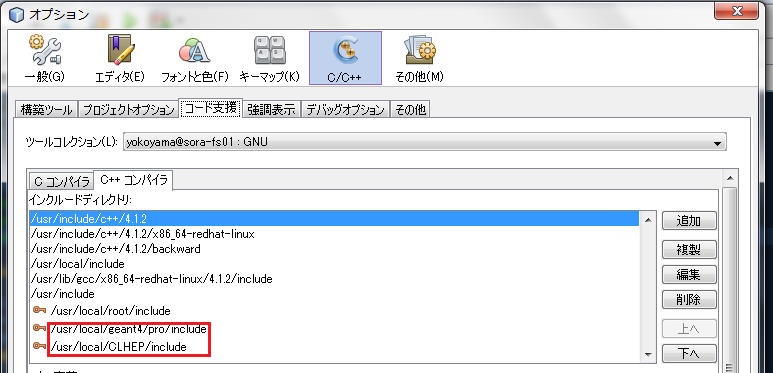
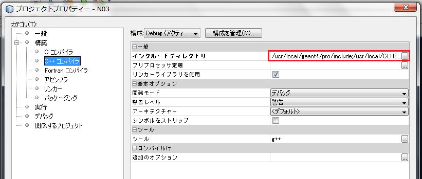

リモート解析環境/NBでGeant4を使う
追記
Geant4-9.5 から、bin/geant4-config なるものが追加されたので、以下の手順は必要なく、ROOTと同様に コンパイラオプションに`geant4-config --cflags`, リンカオプションに`geant4-config --libs` を追加すればOKです。（Geant4のインストールディレクトリのbinにPATHを通しておく必要があります。）
手順
まず、Geant4のインストール時に、
Do you want to install all Geant4 headers in one directory? [n]
に対して、yと答えておく必要がある。
[ツール]→[オプション]→[C/C++]→[コード支援]タブ→[C++コンパイラ]タブ→[追加]から、Geant4とCLHEPのincludeフォルダのパスを入力する。
[ファイル]→[プロジェクト プロパティ]→[構築]→[C++コンパイラ]を選択→[インクルードディレクトリ]に同じくGeant4とCLHEPのincludeフォルダのパスを入力する。
同じウィンドウから[リンカー]→[追加のオプション]に次のオプションを入力する。始めの2つの -L オプションには、Geant4とCLHEPのライブラリフォルダのパスを適宜置き替えて入力する。
-L/usr/local/geant4/pro/lib/Linux-g++ -L/usr/local/CLHEP/lib -lG4Tree -lG4geometry -lG4interfaces -lG4persistency -lG4track -lG4FR -lG4VRML -lG4gl2ps -lG4materials -lG4physicslists -lG4tracking -lG4GMocren - lG4digits_hits -lG4global -lG4modeling -lG4processes -lG4visHepRep - lG4OpenGL -lG4error_propagation -lG4graphics_reps -lG4parmodels - lG4readout -lG4visXXX -lG4RayTracer -lG4event -lG4intercoms - lG4particles -lG4run -lG4vis_management -lCLHEP -lz
以上でコード支援やコンパイルは出来るはず。ただし、NetBeansでの実行は失敗する。 これは、必要な環境変数の設定をしてないためで、Geant4 Installation Guides に従って環境変数の設定をしていれば、ターミナルからの実行は成功するはず。 あるいは、[プロジェクト プロパティ]→[実行]→[環境]から、環境変数を設定しておけばよいと思われるが、ターミナルから実行するので特に不便はないので試してない。